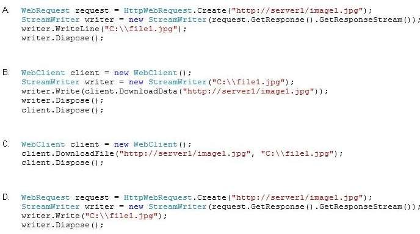

|
You have an application that accesses a Web server named Server1. You need to download an image named Image1.jpg from Server1 and store the image locally as Filel.jpg. Which code should you use?  A. Option A B. Option B C. Option C D. Option D Correct Answer: C Section: Volume B Explanation Explanation/Reference: ExplicaciónRespuesta:Mostrando de manera visual la respuesta:Fuentes: |